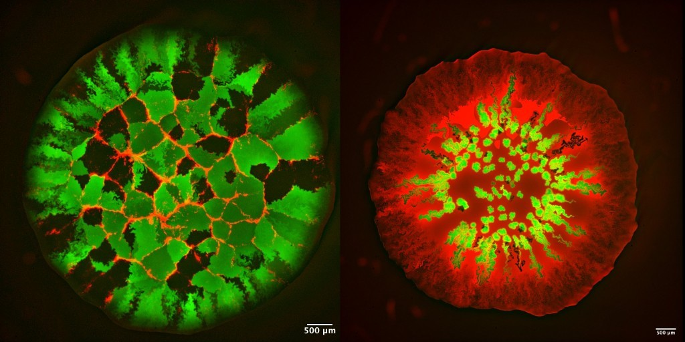
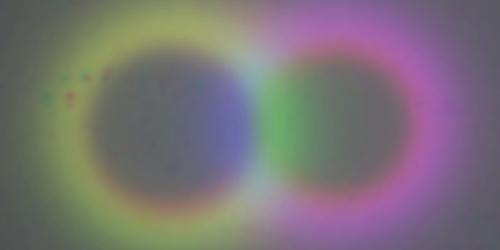
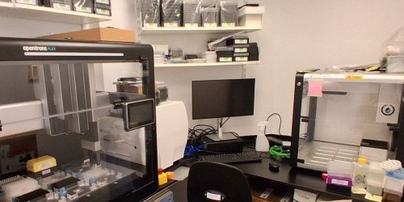
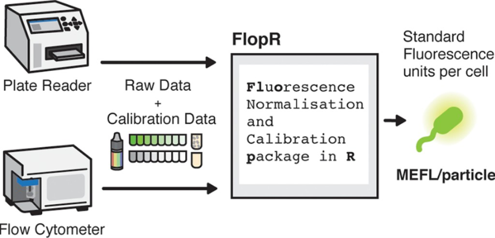

Synthetic microbial communities

Microbes in nature are never found alone.
Through both cooperation and competion, a community of microbes can do much more than one strain alone.
We use two distinct approaches to understand microbial communities and harness their potential for applications from biomanufacturing to living therapeutics.
By building communities from the bottom-up -- engineering each interaction between species and their environment -- we aim to understand how robustness in natural ecosystem emerges and how to create new self-regulating microbiomes.
Conversely, using modern AI methods, we are able to take an existing community and learn how to control its composition and function by manipulating their environment.
Biological information processing

Reacting to their environment in appropriate and specific ways requires living systems to process information in space and time.
We engineer microbes to investigate how complex behaviours can emerge from simple logic on the single-cell level.
This can be leveraged for next-generation biocomputation and smart bio-materials, and to understand the development of cells, tissues and living organisms
Research automation

Understanding and engineering living systems requires slow and expensive interaction with the real world.
Our group accelerates discovery by developing new computational design and learning algorithms for biological systems, focusing lab resources onto experiments that provide the most information.
We also develop automated experimental platforms, enabling higher-throughput and quicker iteration between prediction and falsification.
Quantitative methods & tools

To ensure that our data are reproducible, reusbale, and interoperable between experimental platforms and different labs,
we establish robust quantitative methods and standardised microbial engineering toolkits.